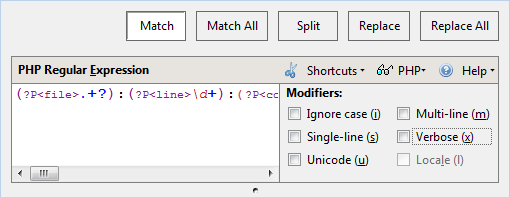
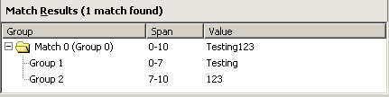
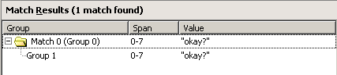
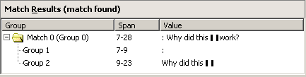
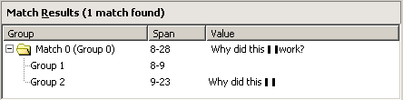
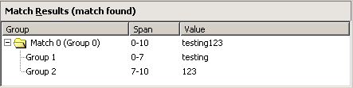

Using the Rx Toolkit Komodo IDE only
Komodo's Rx Toolkit is a tool for building, editing and debugging regular expressions. Build a regular expression in the Regular Expression pane, and enter the sample search string in the Search Text pane. Adjust the regular expression as necessary to produce the desired matches in the Match Results pane.
If you are new to Regular Expressions, see the Regular Expressions Primer. In addition, online references for Python, Perl, PHP, Ruby, and Tcl regular expressions are available via the Rx Toolkit's Help menu.
To open the Rx Toolkit, click in the toolbar, or select Tools|Rx Toolkit.
Rx Toolkit Quick Reference
- Select a language Rx engine
- Create and edit regular expressions in the Regular Expression pane.
- Apply one or more metacharacters to a regular expression by selecting them from the Shortcuts menu or entering them in the Regular Expression pane.
- Select a match type using the buttons at the top of the Rx Toolkit window.
- Apply modifiers to a regular expression by selecting one or more Modifiers check boxes.
- Test a regular expression against a string by entering text in the Search Text pane, or by clicking the Search Text pane's Open button and navigating to a file.
- Right-click a pane in the Rx Toolkit to access a context menu used to Show/Hide Indentation Guides, Show/Hide Line Numbers, Show/Hide EOL Markers, Show/Hide Whitespace and turn Word Wrap on and off. This context menu is not available in the Match Results pane.
- Select Help|Load Sample Regex and Search Text to reload the default regular expression and search text if it has been replaced or deleted.
- Double-click a result in the Match Results pane to highlight the corresponding text in the Search Text pane.
Selecting a Language
Regular expression syntax is similar in most programming languages, but there are some important differences. The Rx Toolkit can evaluate regular expressions using:
Select the regular expression engine you want to use from the drop-down list in the Regular Expression panel. You will need the requisite Perl, PHP, and Ruby interpreters installed to use those engines. Komodo has embedded interpreters for JavaScript and Python.
Creating Regular Expressions
Type or paste your expression in the Regular Expression pane. A regular expression can include metacharacters, anchors, quantifiers, digits, and alphanumeric characters.
Many of the display characteristics available in the Editor Pane can be enabled in the Regular Expression field. However, these characteristics must be manually enabled via key bindings. For example, to display line numbers in the Regular Expression field, press 'Ctrl'+'Shift'+'6' ('Cmd'+'Shift'+'6' on Mac OS X) if the default key binding scheme is in effect.
Note: Do not enclose regular expressions in forward slashes ("/"). The Rx Toolkit does not recognize enclosing slashes.
Adding Metacharacters to a Regular Expression
The Shortcuts menu provides a list of all of the metacharacters that are valid in the selected language.
To add a metacharacter to a regular expression:
- Click Shortcuts to the right of the Regular Expression pane.
- Select a metacharacter from the list. The metacharacter is added to the Regular Expression pane.
If you already know the metacharacter you need, just type it in the Regular Expression pane.
Setting the Match Type
The buttons at the top of the Rx Toolkit Window determine which function is used to match the regular expression to the search text. The options are based on module-level functions of Python's re module. Choose from the following options:
- Match: Scan the search text for the first instance of a match for the regular expression.
- Match All: Find all matches for the regular expression in the search text and display them as a series of matches in the Match Results pane.
- Split: Scan the search text for regular expression matches and split the string apart wherever there is match. Each match is displayed on a separate line in the Match Results pane.
- Replace: Scan the text for the first occurrence of the regular expression and replace it with text specified in the Replacement pane. The Replacement pane is only displayed when either the Replace or Replace All is selected.
- Replace All: Scan the text for all occurrences of the regular expression and replace them with the text specified in the Replacement pane. The Replacement pane is only displayed when either the Replace or Replace All is selected.
Adding Modifiers to a Regular Expression
Add modifiers to regular expression by selecting one or more of the check boxes to the right of the Regular Expression pane:
Note: You must use the Modifiers check boxes to add modifiers to a regular expression. The Rx Toolkit does not recognize modifiers entered in the Regular Expression pane.
- Ignore Case: Ignore alphabetic case distinctions while matching. Use this to avoid specifying the case in the pattern you are trying to match.
- Multi-line Mode: Let caret "^" and dollar "$" match next to newline characters. Use this when a pattern is more than one line long and has at least one newline character.
- Single-line Mode: Let dot "." match newline characters. Use this when a pattern is more than one line long and has at least one newline character.
- Verbose: Permit the use of whitespace and comments in regular expressions. Use this to pretty print and/or add comments to regular expressions.
- Unicode (Python Only): Make the special characters "\w", "\W", "\b" and "\B" dependent on Unicode character properties.
- Locale (Python Only): Make the special characters "\w", "\W", "\b" and "\B" dependent on the current locale.
Evaluating Regular Expressions
A debugged regular expression correctly matches the intended patterns and provides information about which variable contains which pattern.
If there is a match...
- Matches are displayed in the Match Results pane.
- Komodo highlights the search text string in yellow.
If there is no match...
- If a regular expression does not match the test string, an error message is displayed in the Match Results pane.
- If a regular expression is invalid, the title bar of the Match Results pane becomes red and details of the error are displayed in that pane.
Match Results
If a regular expression collects multiple words, phrases or numbers and stores them in groups, the Match Results pane displays details of the contents of each group.
The Match Results pane is displayed with as many as four columns, depending on which match type is selected. The Group column displays a folder for each match; the folders contain numbered group variables. The Span column displays the length in characters of each match. The Value column lists the values of each variable.
Modifier Examples
This section shows some sample regular expressions with various modifiers applied. In all examples, the default match type (Match All) is assumed:
Using Ignore Case
The Ignore case modifier ignores alphabetic case distinctions while matching. Use this when you do not want to specify the case in the pattern you are trying to match.
To match the following test string...
Testing123
...you could use the following regular expression with Ignore case selected:
^([a-z]+)(\d+)
The following results are displayed in the Match Results pane:
Discussion
This regular expression matches the entire test string.
The ^ matches the beginning of a string. The
[a-z] matches any lowercase letter from "a" to "z".
The + matches any lowercase letter from "a" to "z"
one or more times. The Ignore case modifier lets
the regular expression match any uppercase or lowercase letters.
Therefore ^([a-z]+) matches "Testing". The
(\d+)matches any digit one or more times, so it
matches "123".
Using Multi-Line Mode
The Multi-line modifier allows ^
and $ to match next to newline characters. Use this
when a pattern is more than one line long and has at least one
newline character.
To match the subject part of the following test string...
"okay?"
...you could use the following regular expression with Multi-line selected:
^(\"okay\?\")
The following results are displayed in the Match Results pane:
Discussion
This regular expression matches the entire test string.
The ^ matches the beginning of any line. The
\" matches the double quotes in the test string. The
string matches the literal word "okay". The \?
matches the question mark "?". The \" matches the
terminal double quotes. There is only one variable group in this
regular expression, and it contains the entire test string.
Using Single-Line Mode
The Single-line modifier mode allows "." to match newline characters. Use this when a pattern is more than one line long, has at least one newline character, and you want to match newline characters.
To match the following test string...
Subject: Why did this work?
...you could use the following regular expression with Single-line selected:
(:[\t ]+)(.*)work\?
The following results are displayed in the Match Results pane:
Discussion
This regular expression matches everything in the test string following the word "Subject", including the colon and the question mark.
The (\s+) matches any space one or more times, so
it matches the space after the colon. The (.*)
matches any character zero or more times, and the
Single-line modifier allows the period to match
the newline character. Therefore (.*) matches "Why
did this <newline> match". The \? matches the
terminal question mark "?".
Using Multi-line Mode and Single-line Mode
To match more of the following test string...
Subject: Why did this work?
...you would need both the Multi-line and Single-line modifiers selected for this regular expression:
([\t ]+)(.*)^work\?
The following results are displayed in the Match Results pane:
Discussion
This regular expression matches everything in the test string following the word "Subject", including the colon and the question mark.
The ([\t ]+) matches a Tab character or a space
one or more times, which matches the space after the colon. The
(.*) matches any character zero or more times, which
matches "Why did this <newline>". The ^work
matches the literal "work" on the second line. The
\? matches the terminal question mark "?".
If you used only the Single-line modifier,
this match would fail because the caret "^" would
only match the beginning of a string.
If you used only the Multi-line modifier,
this match would fail because the period "." would
not match the newline character.
Using Verbose
The Verbose modifier ignores whitespace and comments in the regular expression. Use this when you want to pretty print and/or add comments to a regular expression.
To match the following test string...
testing123
...you could use the following regular expression with the Verbose modifier selected:
(.*?) (\d+) # this matches testing123
The following results are displayed in the Match Results pane:
Discussion
This regular expression matches the entire test string.
The .* matches any character zero or more times,
the ? makes the * not greedy, and the
Verbose modifier ignores the spaces after the
(.*?). Therefore, (.*?) matches
"testing" and populates the "Group 1" variable. The
(\d+) matches any digit one or more times, so this
matches "123" and populates the "Group 2" variable. The
Verbose modifier ignores the spaces after
(\d+) and ignores the comments at the end of the
regular expression.
Using Regular Expressions
Once a regular expression has been built and debugged, you can add it to your code by copying and pasting the regular expression into the Komodo Editor Pane. Each language is a little different in the way it incorporates regular expressions. The following are examples of regular expressions used in Perl, Python, PHP and Tcl.
Perl
This Perl code uses a regular expression to match two different spellings of the same word. In this case the program prints all instances of "color" and "colour".
while($word = <STDIN>){
print "$word" if ($word =~ /colou?r/i );
}
The metacharacter "?" specifies that the preceding character,
"u", occurs zero or one times. The modifier "i" (ignore case)
that follows /colou?r/ means that the regular
expression will match $word, regardless of whether
the specified characters are uppercase or lowercase (for example,
Color, COLOR and CoLour will all match).
Python
This Python code uses a regular expression to match a pattern
in a string. In Python, regular expressions are available via the
re module.
import re
m = re.search("Java[Ss]cript", "in the JavaScript tutorial")
if m:
print "matches:", m.group()
else:
print "Doesn't match."
The re.search() function returns a match object
if the regular expression matches; otherwise, it returns none.
The character class "[Ss]" is used to find the word "JavaScript",
regardless of whether the "s" is capitalized. If there is a
match, the script uses the group() method to return
the matching strings. Otherwise the program prints "Doesn't
Match".
Tcl
This Tcl code uses a regular expression to match all lines in a document that contain a URL.
while {[gets $doc line]!=-1} {
if {regexp -nocase {www\..*\.com} $line} {
puts $line
This while loop searches every line in a file for
any instance of a URL and displays the results. Tcl implements
regular expressions using the regexp and
regsub commands. In the example shown above, the
regexp is followed by the -nocase
option, which specifies that the following regular expression
should match, regardless of case. The regular expression attempts
to match all web addresses. Notice the use of backslashes to
include the literal dots (.) that follow "www" and precede
"com".
PHP
This PHP code uses a Perl Compatible Regular Expressions(PCRE) to search for valid phone numbers in the United States and Canada; that is, numbers with a three-digit area code, followed by an additional seven digits.
$numbers = array("777-555-4444",
"800-123-4567",
"(999)555-1111",
"604.555.1212",
"555-1212",
"This is not a number",
"1234-123-12345",
"123-123-1234a",
"abc-123-1234");
function isValidPhoneNumber($number) {
return preg_match("/\(?\d{3}\)?[-\s.]?\d{3}[-\s.]\d{4}$/x", $number);
}
foreach ($numbers as $number) {
if (isValidPhoneNumber($number)) {
echo "The number '$number' is valid\n";
} else {
echo "The number '$number' is not valid\n";
}
}
This PHP example uses the preg_match function for
matching regular expressions. Other PCRE functions are also available.
If the function isValidPhone returns true, the
program outputs a statement that includes the valid phone number.
Otherwise, it outputs a statement advising that the number is not
valid.
Ruby
This Ruby code uses a regular expression that does simple email addresses validation.
puts 'Enter your email address:'
cmdline = gets.chomp
addrtest = /^\w{1,30}\@\w{1,30}\.\w{2,4}$/i
if addrtest.match(cmdline)
puts 'Address is valid.'
else
puts 'Address is NOT valid.'
tries = tries - 1
end
The regular expression is stored in the addrtest
variable, which is compared to the cmdline variable
using the match method. The regular expression
specifies that the address must have:
- a username part of up to 30 alphanumeric characters
- an "@"
- a domain name of up to 30 alphanumeric characters
- a "."
- a top-level domain of between two and four alphanumeric characters
It will accept some addresses that are not fully RFC compliant, and will not accept long user or domain names. A more robust regular expression is:
/^([a-z0-9]+[._]?){1,}[a-z0-9]+\@(([a-z0-9]+[-]?){1,}[a-z0-9]+\.){1,}[a-z]{2,4}$/i
This does not limit the length of the username or domain. It also enforces some additional requirements:
- only letters, numbers, "." and "_" can be used in the username
- only letters, numbers, and "-" can be used in the username
- "_" and "." cannot be used at the beginning or end of the username
- "-" cannot be used at the beginning or end of the domain name
- the top-level domain can only contain letters